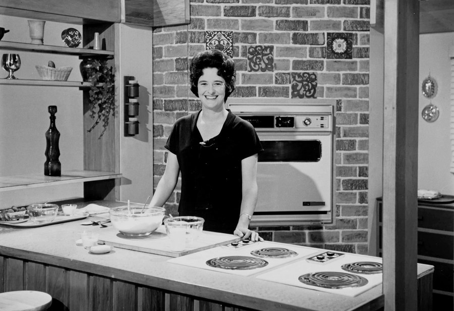
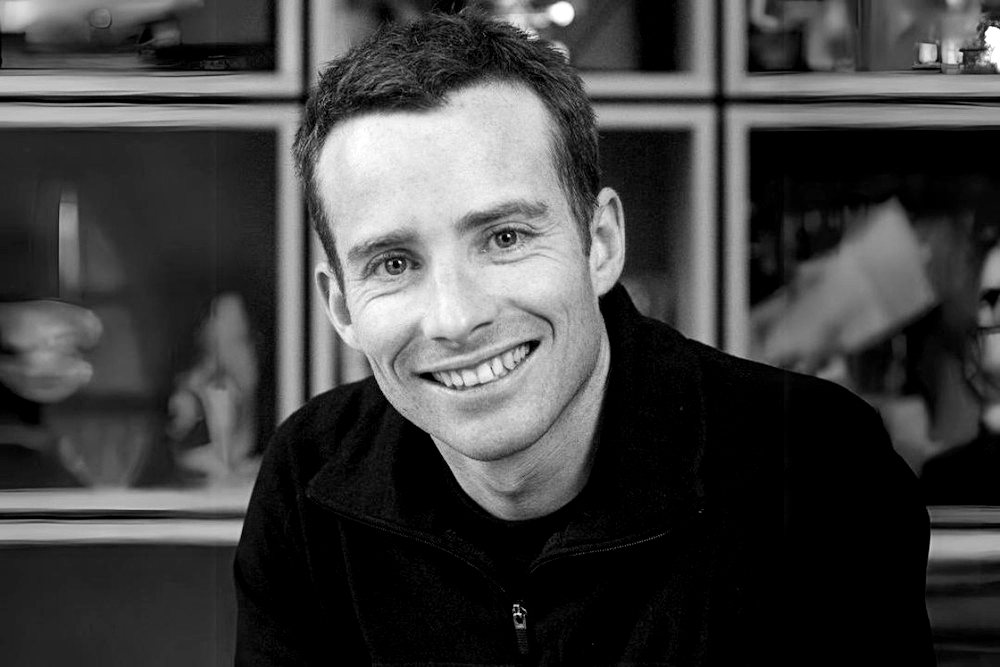
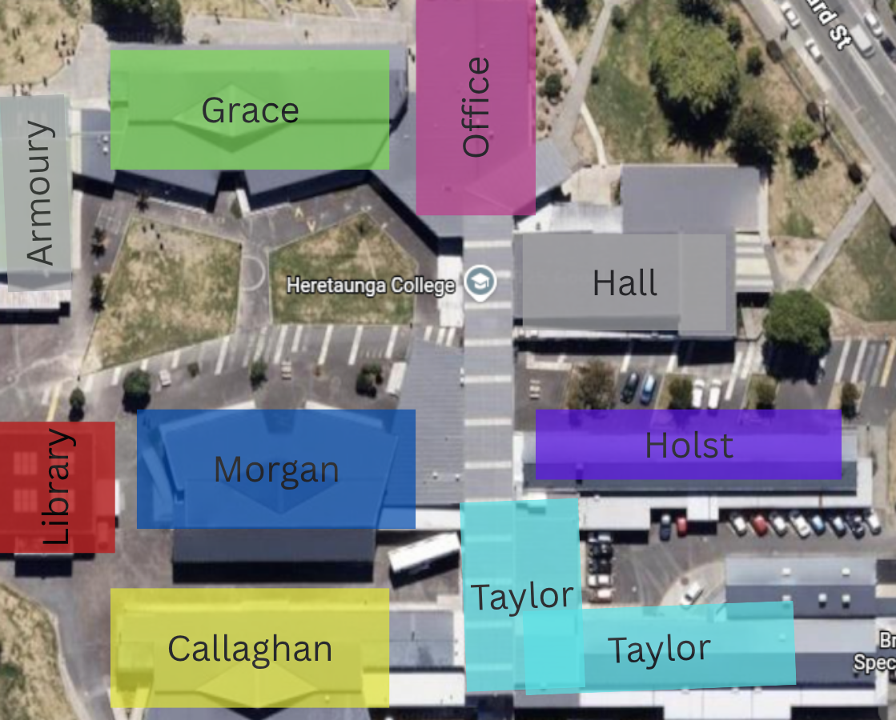

Our Wings
In 2013 Heretaunga College was reopened having undergone a $13 million rebuild. As a result we have modern facilities to accommodate learning. The school has been designed to have a spine running through it in which the wings and learning spaces come off it. Each wing has been named to reflect the learning areas that are taught there and to celebrate achievements of famous New Zealanders.
Our learning wings are named Taylor, Callaghan, Grace, Holst and Morgan. Each celebrates excellence in a different field and represents one of the curriculum areas taught throughout the school.
Taylor Wing
Digital Technologies & Visual Arts
Sir Richard Taylor is a highly regarded New Zealand film and special effects professional who is best known for his work in the film industry. He was born on February 10, 1965, in New Zealand. Sir Richard Taylor is the co-founder and creative director of Weta Workshop, a renowned special effects and prop design company based in Wellington, known for creating props, costumes and visual effects among other things for several notable films, including "The Lord of the Rings" trilogy, "The Hobbit" trilogy, "King Kong," "Avatar," "District 9" and many others. In recognition of his contributions to the film industry, Sir Richard Taylor was knighted and became Sir Richard Taylor in 2010.
Callaghan Wing
Sciences
Sir Paul Callaghan was a prominent New Zealand scientist and one of the country's leading physicists. He was born on August 19, 1947, in Wanganui, and passed away on March 24, 2012. Sir Paul Callaghan made significant contributions to the fields of nuclear magnetic resonance (NMR) and magnetic resonance imaging (MRI) and was a respected figure in the scientific community. In recognition of his contributions to science and his efforts to promote science and innovation in New Zealand, Sir Paul Callaghan was named a Knight Companion of the New Zealand Order of Merit (KNZM) in 2009.
Grace Wing
English & Literature
Patricia Grace is a prominent New Zealand author and one of the country's most celebrated writers. She was born on August 17, 1937, in Wellington. Patricia Grace is known for her contributions to Māori literature and her exploration of the Māori culture, identity, and history in her works. Some of her most notable works include novels like "Potiki" (1986), which won the New Zealand Book Award for Fiction, and "Cousins" (1992), which explores the lives of three Māori women over four decades. Patricia Grace's literary achievements have earned her numerous awards and recognition, including the prestigious Neustadt International Prize for Literature in 2008.

Holst Wing
Hospitality
Alison Holst is a well-known New Zealand cook, food writer, and television personality. She was born on February 14, 1938, in Dunedin. Alison Holst is widely regarded as one of New Zealand's most trusted and beloved culinary figures, and she has made significant contributions to New Zealand's food culture over the years. Holst has authored numerous cookbooks that have become bestsellers in New Zealand. Her cookbooks cover a wide range of recipes, from traditional Kiwi dishes to international cuisines, and are known for their clear and easy-to-follow instructions. Alison Holst was awarded the Queen's Service Medal for services to the food industry in New Zealand. She is often referred to as "New Zealand's cooking guru."

Morgan Wing
Maths & Social Sciences
Sam Morgan is a New Zealand entrepreneur and businessman known for co-founding Trade Me, one of New Zealand's most popular online auction and classified advertising websites. Trade Me was launched in 1999, and Sam Morgan, along with his partners, played a pivotal role in its early success. The website quickly gained popularity, becoming a significant platform for buying and selling goods and services in New Zealand. It covers a wide range of categories, including electronics, automobiles, real estate, and more. Sam Morgan's entrepreneurial success with Trade Me has made him a notable figure in the New Zealand business and technology sectors.

In addition to these named wings, we also have:
E Wing - Our Mechanical Wing, where we teach metal work and woodwork
Lang Wing - Our Languages Learning Wing
Sports Centre - A modern, state of the art school sports and recreation centre
P1 and P2 - Classes used for Mathematics
P3 and P4 - Classes used for Health and PE theory work
Above there is a map of our school with each wing highlighted.